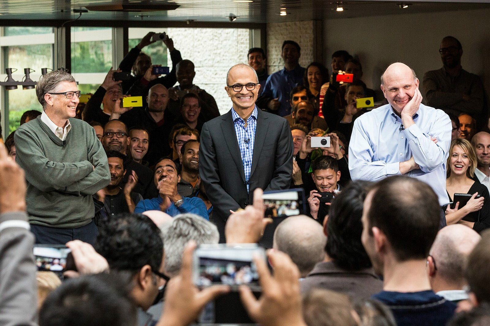

封面
安全与治理纳德拉呼吁为 AI 模型配备「紧急制动」：假定模型已被攻破，分离模型与编排层
微软 CEO 萨蒂亚·纳德拉 10 月 10 日在 X 发文，主张把前沿模型当作内部人风险：分离模型与 harness、外置控制、防篡改日志，并保留人类可随时拉下的「紧急制动」。
相关图片：2014 年纳德拉就任微软 CEO 首日与盖茨、鲍尔默合影，不是本次发文现场。图片来源：Briansmale / 维基共享资源，CC BY-SA 4.0。本站缩小并封装为 SVG，副本仍为 CC BY-SA 4.0。